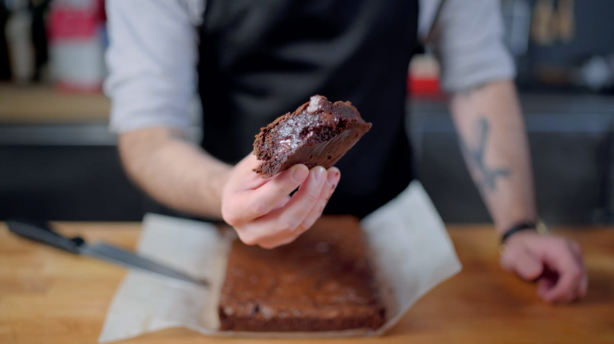

The Best Ooey Gooey Brownies

Description
These brownies come from the popular Binging with Babish youtube channel. They are the perfect amount of chocolatey and gooey. You have got to give them a try and see for yourself.
Ingredients
- 1 & 3/4 cup granulated sugar
- 2 sticks unsalted butter
- 1 & 1/2 tsp espresso powder
- 1 tsp vanilla exctract
- 4 eggs + 2 egg yolks
- 1 cup cocoa powder
- 1/2 cup vegetable oil
- 1 tsp baking powder
- 1 tsp kosher salt
- 6 ounces bittersweet chocolate
- 1 & 1/2 cups bread flour
Steps
- Preheat oven to 350 F
- Melt butter in saucepan
- Chop chocolate
- In a large mixing bowl whisk sugar, butter, espresso powder, vanilla, and eggs with extra yolks
- Add cocoa powder, vegetable oil, and chopped chocolate then whisk
- In a separate bowl, combine flour, salt and baking powder
- Combine flour mixture with chocolate mixture
- Bake 25-30 minutes
- ENJOY